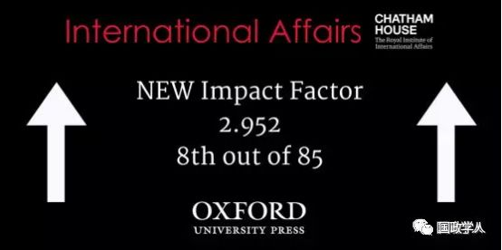
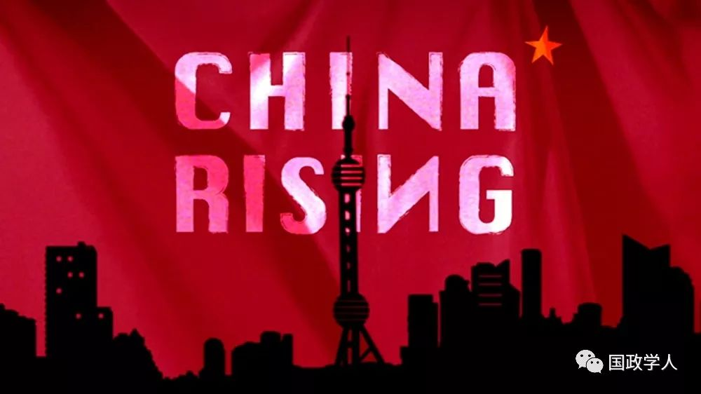

收录于合集

简 介
【作者】 Rosemary Foot（罗斯玛丽·福特），牛津大学国际关系学教授，牛津大学圣安东尼学院资深研究员，著名的中国问题研究专家，曾是哈佛大学、中国人民大学等高校的访问学者。1977年在伦敦政治经济学院（LSE）获博士学位，1996年当选为英国社会科学院研究员，主要研究领域是亚太地区国际关系，代表作有《国际关系中的秩序与公正》、《权力的实践：1949年后的中美关系》等。
【编译】 姚寰宇
【校对】 徐琛
【审核】 徐枫潇 王国欣
【来源】 Rosemary Foot（2019）, Remembering the past to secure the present: Versailles legacies in a resurgent China, International Affairs ,95: 1,143–160.
【期刊】 《国际事务》（International Affairs）是国际关系领域内领先的同行评审学术期刊。该期刊的2017年影响因子为2.952，世界排名第8位.

铭记过去，把握当下：复兴的中国与凡尔赛遗产
Remembering the past to secure the present：Versailles legacies in a resurgent China
Rosemary Foot
内容提要
1919年的《凡尔赛和约》向中国表明，尽管加入了协约国阵营，但要成为国际社会的正式成员并没有那么容易：巴黎和会上中国既没有夺回山东的领土主权，也没得到作为合法主权国家地位的承认；《凡尔赛和约》签订后一个世纪里，尽管中国的物质条件和国际地位发生了翻天覆地的变化，但凡尔赛时代的“遗产”——中国的这段历史经历，至今仍在某种程度上影响着中国对国际政治的态度。
受害者情结是一种持续而有害的比喻，一方面这看起来是中国所难以克服的，但另一方面，这种情节也可以为中国领导层所用。尽管政府方面现在更加倾向于，将这种情绪与中国正走向民族复兴的契机相联系，但是这种受害者叙事（victim narrative）的深远存在，仍扭曲并损害着中国处理对外关系的方式。
本文主体共分为五个部分：中国权力和地位的转变、凡尔赛合约的长期历史背景、凡尔赛时代的遗产、习近平时代的改变与延续、以及作者的结论。首先，对中国自1919年以来在权力和地位上的重大转变进行概述，继而探寻负面消极情绪（主要源于中国被日本和西方帝国主义压迫的经历，并进一步受到凡尔赛会议的刺激）是如何保持强大力量的。在中国，这种情绪已经转化为对西方和日本的根深蒂固的不信任，同时这种情绪也导致了历届中国政府努力提升综合国力，并树立起“强大的国家是国家安全和世界秩序的保障”的重要观念。

正文
**1
** 中国权力和地位的转变
作者首先将中国与日本和美国分别进行对比，然后从中国对全球的经济影响、科研能力、军事预算以及国内脱贫工作等多个角度，回顾了百年来中国在实力和国际地位上的重要转变。随后作者指出，随着物质实力的增长，中国开始认真对待其大国地位，并声称认识到作为一个大国所肩负的责任。同时中国政府还在全球和区域治理机构中更加凸显自己的作用：如在G20中更为活跃，创建亚投行（AIIB）， 以及提出‘一带一路’倡议（BRI）。关于上述发展的描述，大致分为两类——一是将其视为中国大战略的组成部分，二是认为霸权秩序从美国向中国的过渡可能已经准备就绪了。或许，当下的中国最大的变化在于，中国领导人提出了一种新的、非西方的、可持续的、成功的政治和经济模式，同时，这种模式也与其他国家的需求相呼应。
那么，基于国际地位和物质实力方面发生的这些戏剧性的、令人印象深刻的变化，中国领导层为何仍对中国在全球政治中的地位感到不安？正如约瑟夫·奈在本期的专题中所解释的：“中国的复兴不一定会转化为影响力和它想要的结果，以及吸引它视为应得的跟随者”。在国际地位完成飞跃的情况下，中国政府为何仍保留众多与早期中国处于从属地位相关的态度？1919年凡尔赛会议的准备和决定，对于解释这种无法摆脱不满情绪的现象，即“外交权利文化”（a diplomatic culture of entitlement）具有重要意义。长期以来，这种情绪滋生了一种针对西方和日本的民族主义，这种民族主义有时近乎“仇外”（xenophobic）。中国同许多西方国家以及日本之间的关系仍存在高度不信任，它似乎经常在寻找证据，以证明这些国家仍决心遏制中国复兴或推翻其政治体系。尽管中国领导层已将重点放在软实力建设，但这种明显的不安会削弱外界对中国地位转变、以及中国带来的积极影响的接受程度。
**2
** 凡尔赛和约的长期历史背景
作者首先对中国自清代鼎盛时期，到近代衰落的历史进行梳理，同时列举中国人为改变自身国际地位而做出的努力与探索，并对巴黎和会、五四运动的相关背景与国际关系史实进行阐述。
五四运动的遗产支撑着整个20世纪的中国历史，并在受过良好教育的中国人中引起深远的共鸣：卖国不再被容忍；中国政府只有在坚决抵抗外侮、维护国家主权和领土完整时，才能赢得支持。此外，五四运动引发了中国对西方及其自由民主模式的背离，当时，一个颇具吸引力的选择是无政府主义，这种吸引力确保了国际主义情绪与五四运动的民族主义相融合，甚至在短时间内在中国占据主导地位。
然而，尽管对凡尔赛会议深感失望，中国仍然以为数不多的非欧洲独立国家的身份加入了国际联盟（the League of Nations），并在1920年获得国联理事会的非常任理事国席位（虽然当时日本是常任理事国）。同时，作为1921-1922年华盛顿会议上通过的《九国公约》的签约国之一，要求山东在1922年归还，以及恢复中国的关税自主权并保护其主权和领土完整。但是，英国坚持在香港保留治外法权的举动，仍意味着对中国完整主权地位的否认。此外，当1931年日本进军满洲建立傀儡政府并于1937年全面侵华时，国际联盟很快就被证明是无效的。中国政府曾经依据《九国公约》提出申诉，指责日本违反条款规定，但当时的事实证明，中国想要通过法律途径获取赔偿的做法是徒劳的。
**3
**
** ** 凡尔赛时代的遗产****
凡尔赛时代在中国留下的重要遗产是相辅相成的——涵盖了树立中国的国际形象，建设一个能够抵御任何威胁、从而维护国家统一和领土完整不受侵犯的主权国家。
中国政府在当时和事后，并未就中国没能在凡尔赛获得赔偿的原因做出详细解释，因而引发了一种强烈的民族主义情绪——这种情绪最初是通过五四运动呈现，在随后的数十年里又多次爆发。当这种民族主义情绪没有对执政党和国家构成威胁时，可能对中国领导层有用。随后作者就新中国领导人的具体做法详细论述该观点，并指出，长期以来中国官方对西方一直秉持的不信任态度，在面对1945年以后全球体系中最强大的美国时表现尤为强烈，尽管中美两国在1972年起恢复邦交之后密切了双方的相互交流，加深了相互依赖，但很难证明两国建立起了互信的双边关系。
**4
**
** ** ** ** ** 习近平时代的改变与延续**********
在向国际社会大规模开放的邓小平时代，中国尚且高度怀疑西方势力渗透并警惕西方意图，那么在习近平时代这种怀疑有多强烈？当中国在政治、经济、社会各方面走过诸多里程碑后，这些20世纪早期的遗产是否会终将消退？作者回顾了习近平执政以来中国在世界舞台上更加积极自信的变化后指出：物质条件上的转变并没有催生中国任何慷慨的回应，相反，它更倾向于将当下自信与成功的中国同在近代史上的耻辱经历相结合。不同的是，习近平时代更加强调中国共产党的作用：中国共产党是过去中国的主要保护者，而今以更加廉洁守法的面貌再保护中国不受任何来自当下、和未来的羞辱。从习近平主席上任后不久便前往参观《复兴之路》等一系列行动来看，国家耻辱仍然是一种不能轻易放弃的、宝贵的集体情感。
**5
**
** ** ** ** ** ** ** ** ** 结 论******************
当今中国领导层认为，中国已经进入了一个伟大的时期，取得的这些成就不仅归功于中国所选择的政治经济模式的优越性，还归功于中国决心铭记物资匮乏、政治分裂和帝国主义侵略曾带来的负面教训。这种优越感与不安全感的特殊结合导致了当代中国外交政策缺乏一定的敏锐性和同理心，由于缺乏对其他国家的经验的敏感性，缺乏对弱小邻国政治情感变化的敏感性，中国将发现，想获得其他国家对其在亚太地区霸权地位的认同并非易事。外界在描述、评价中国的对外政策时习惯将之理解为“朝贡体系的回归”，这种观点虽与中国的主观意图相去甚远，但偏差正体现了欧洲和日本殖民时代之后留存的所谓的“殖民主义遗产”的根深蒂固，而这种感知上的不协调可能将会很大程度上影响中国的复兴之路。
· 简 评 ·
**
**
如作者所言，巴黎和会中国外交失败以及随后而来的种种磨难，确实给中华民族带来了沉重的打击和伤害。但中国人对待 “ 遗产 ” 的态度并不是在所谓 “ 受害者情结 ” 的桎梏内踽踽不前 —— 相反，作者所谓的 “ 民族主义 ” ，正是支撑中华民族在百年复兴路上不断摸索前进的、以爱国主义为核心的民族精神。中国不但没有形成与世隔绝的 “ 仇外 ” 情感，相反还走上了更加开放包容的中国特色社会主义道路，并形成了以改革创新为核心的时代精神。
今天，中国比历史上任何时期都更接近、也更有信心和能力实现中华民族伟大复兴的目标。上一个动荡百年已经过去，凡尔赛时代的宝贵遗产对今日的中国而言，是在面对当下百年未有之大变局时更加淡定从容，面对西方某国无端发难时 “ 谈，大门敞开；打，奉陪到底 ” 的坚定立场。
中国领导人曾言： “ 任何人都不可能改变历史和事实，历史是最好的教科书，也是最好的清醒剂。 ” 坚定不移走中国特色社会主义道路，早日实现中华民族的伟大复兴，是我们对凡尔赛时代能给出的最好的历史回应。
** 官网链接：** Oxford Academic:https://academic.oup.com/ia
_ ** _ 本文由国政学人微信平台独家编译首发**
更多阅读
【重磅速递】约瑟夫·奈：美国霸权的兴衰：从威尔逊到特朗普 | 国政学人
【重磅推荐】巴里·布赞：英国学派视角下的中国崛起 | 国政学人